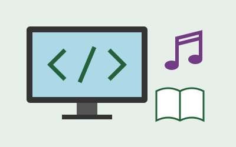

Sobre
A Semana de Tecnologia e Cultura tem como objetivo aproximar os estudantes da ciência, da tecnologia e da arte. O evento incentiva a aprendizagem e a troca de conhecimentos no IFCE Campus Maranguape.
Durante a semana, os participantes poderão acompanhar palestras, oficinas, exposições de projetos e apresentações culturais. As atividades buscam estimular a criatividade e a participação dos alunos.

Programação
| Horário | Atividade | Local |
|---|---|---|
| 08h | Palestra sobre tecnologia | Auditório |
| 10h | Oficina de HTML e CSS | Laboratório de informática |
| 14h | Exposição de projetos | Pátio |
| 16h | Apresentação musical | Auditório |
Atividades
Oficina de HTML e CSS
Aprenda os primeiros passos para criar uma página na internet.
Mais informações na programaçãoExposição de projetos
Conheça os trabalhos e as ideias desenvolvidas pelos estudantes.
Mais informações na programaçãoApresentação musical
Participe de um momento de música e valorização da cultura.
Mais informações na programaçãoInscrições
Para consultar informações sobre inscrições e eventos da instituição, acesse o site do IFCE.